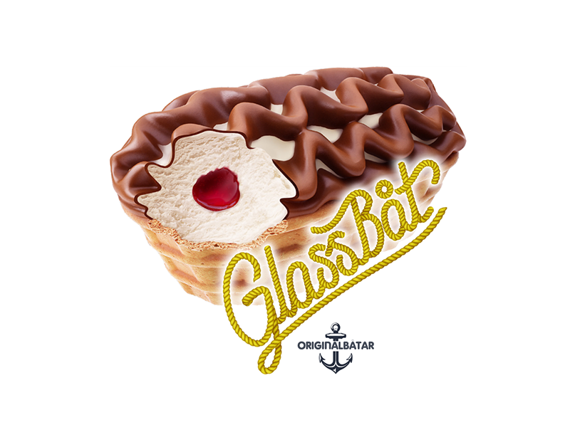
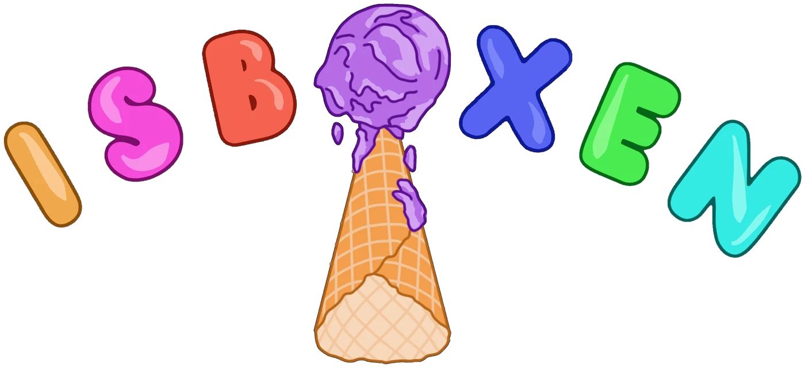
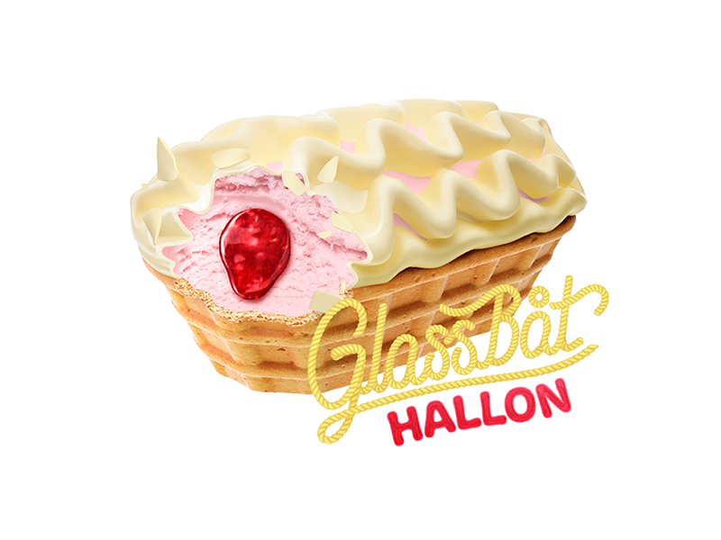
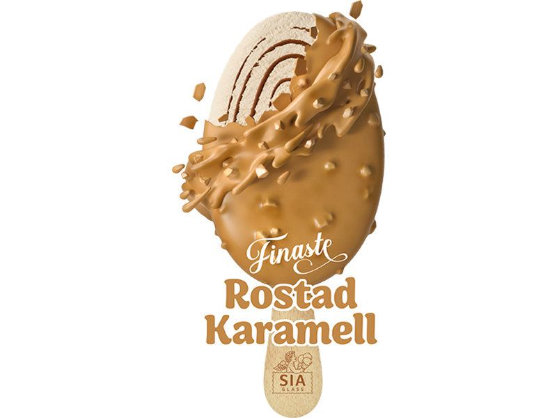
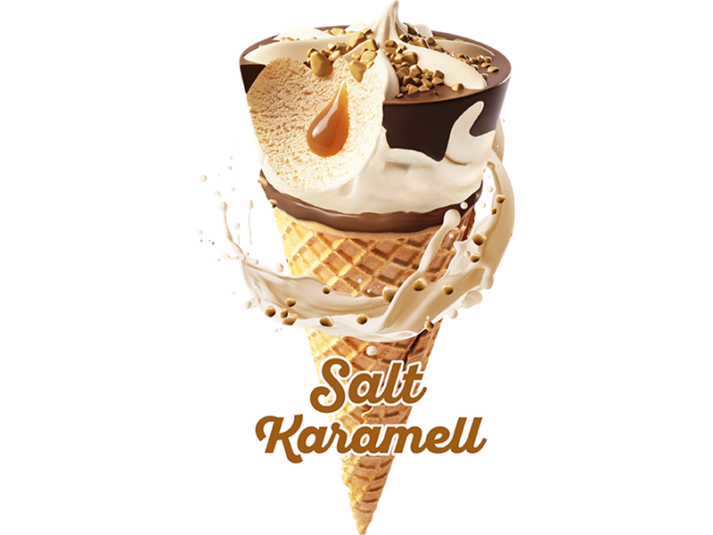
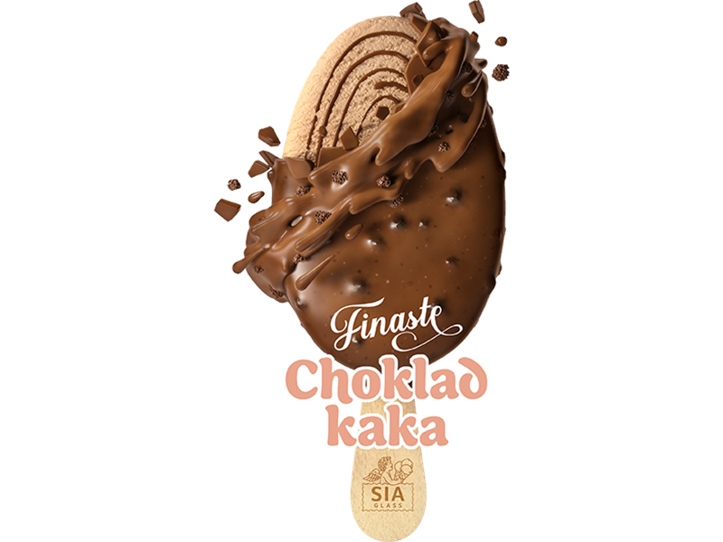

Glassbåt – Originalet
Krämig vaniljglass på svensk grädde, jordgubbssylt & chokladöverdrag i båtrån. Klassiker sedan 1961.
Allergener: Gluten, Laktos, Mjölk, Soja.

Självplock ur glassboxen – välj din favorit, swisha och njut. Lika enkelt som det låter.
Stängt för säsongen
Glassboxen är tömd och vilar över vintern. Vi öppnar igen till sommaren 2027 – välkommen tillbaka då!
Öppna glassboxen och välj din favorit ur utbudet.
Betala snabbt och säkert med Swish. Priserna ser du på plats.
Klart! Avnjut glassen direkt på plats eller ta med den hem.
Ett axplock ur frysen inför nästa säsong – hela utbudet och aktuella priser ser du på plats när vi öppnar igen.

Krämig vaniljglass på svensk grädde, jordgubbssylt & chokladöverdrag i båtrån. Klassiker sedan 1961.
Allergener: Gluten, Laktos, Mjölk, Soja.

Len hallonglass gjord på svensk färsk grädde med frisk hallonsylt och dopp med vit chokladsmak i båtformat rån.
Allergener: Gluten, Laktos, Sojalecitin, Mjölkprotein.

Krämig gräddglass gjord på svensk färsk grädde med rostad vit choklad, mandelpasta och karamelldopp med hackad rostad mandel.
Allergener: Nötter, Laktos, Mjölkprotein, Sojalecitin. Kan innehålla spår av gluten.
Krämig vaniljglass gjord på svensk färsk grädde doppad i len mjölkchoklad med rostad hackad mandel.
Allergener: Nötter, Laktos, Mjölkprotein.

Len saltkaramellglass gjord på svensk färsk grädde smaksatt med Dulce de leche, salt kolasås, smörkolabitar med kakaodopp i bakat rån.
Allergener: Gluten, Laktos, Mjölkprotein.

Fyllig chokladglass gjord på svensk färsk grädde med chokladsås, doppad i härlig mjölkchoklad med krispiga kakbitar.
Allergener: Gluten, Laktos, Mjölkprotein. Kan innehålla spår av trädnötter, mandel, ägg och soja.
Du hittar glassboxen i Stubbsand, utanför Örnsköldsvik.
Stubbsand 338, 891 96 Arnäsvall
Stängt för säsongen – vi öppnar igen till sommaren 2027.
Vägbeskrivning